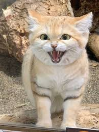

Article 作者简介：猫猫是一位电台节目主持猫，是小猫咪们喜爱的猫猫姐姐
劣迹斑斑的唐恩都乐paragraph
唐三猫嘟嘟和企鹅乐乐雇佣可怜的童工小奶咪制作猫屎咖啡。唐三猫嘟嘟和企鹅乐乐雇佣可怜的童工小奶咪制作猫屎咖啡。唐三猫嘟嘟和企鹅乐乐雇佣可怜的童工小奶咪制作猫屎咖啡。唐三猫嘟嘟和企鹅乐乐雇佣可怜的童工小奶咪制作猫屎咖啡。唐三猫嘟嘟和企鹅乐乐雇佣可怜的童工小奶咪制作猫屎咖啡。唐三猫嘟嘟和企鹅乐乐雇佣可怜的童工小奶咪制作猫屎咖啡。
可爱猫猫的图片image和figure
Image

Figure
Default Size
300px
Using Width and Height
Using Percentages
给猫猫姐姐写邮件哟(Font Awesome)
唐恩都乐的背后黑手
发现这只臭猫请举报举报！
走过路过请给我捐钱
猫咪的Hyperlink
不同的hyperlink的source
1.Internet链接
2.folder内链接
3.页面内ID链接
4.用图片作为clickable contents
猫咪的Hyperlink的打开方式
1.同页面打开
2.新页面打开
3.top打开
4.parent打开
猫咪的唱歌跳舞
猫咪涮肉忙
猫咪的歌喉
小朋友们的饭量Table
饭量表
| maomao | dudu | xiaobai |
|---|
| 1 | 2 | 3 |
| 2 | 3 |
| 4 | 5 | 6 |
| 7 | 8 | 9 |
Soon we'll be writing HTML with the best of them.
各种小东西
使用div(block)
猫猫最爱喵喵喵松松最爱吱吱吱
熊熊会狗刨
使用span(inline)
猫猫最爱喵喵喵松松最爱吱吱吱熊熊会狗刨
使用blockquote(block)
猫猫最爱喵喵喵 松松最爱吱吱吱
熊熊会狗刨
使用cite(inline)
猫猫最爱喵喵喵 松松最爱吱吱吱 熊熊会狗刨
使用detail
松松最爱吱吱吱
猫猫最爱喵喵喵
松松最爱吱吱吱